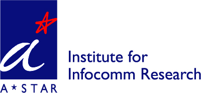
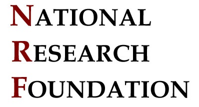

1st ACM Cyber-Physical System Security Workshop (CPSS 2015)held in conjunction with ACM AsiaCCS'15April 14-17, 2015, Singapore. |
Important Dates |
Submissions Due:
Notification: Jan 31, 2015
Camera-ready Due:
Workshop: April 14, 2015
| Organized by | Supported by | Published by | |
 |
 |
Call for Papers |
Cyber-Physical Systems (CPS) consist of large-scale interconnected systems of heterogeneous components interacting with their physical environments. There are a multitude of CPS devices and applications being deployed to serve critical functions in our lives. The security of CPS becomes extremely important. This workshop will provide a platform for professionals from academia, government, and industry to discuss how to address the increasing security challenges facing CPS. Besides invited talks, we also seek novel submissions describing theoretical and practical security solutions to CPS. Papers that are pertinent to the security of embedded systems, SCADA, smart grid, and critical infrastructure networks are all welcome, especially in the domains of energy and transportation. Topics of interest include, but are not limited to:
- Adaptive attack mitigation for CPS
- Authentication and access control for CPS
- Availability, recovery and auditing for CPS
- Data security and privacy for CPS
- Embedded systems security
- EV charging system security
- Intrusion detection for CPS
- Key management in CPS
- Legacy CPS system protection
- Lightweight crypto and security
- SCADA security
- Security of industrial control systems
- Smart grid security
- Threat modeling for CPS
- Urban transportation system security
- Vulnerability analysis for CPS
- Wireless sensor network security
Submission Instructions |
Submitted papers must not substantially overlap papers that have been published or that are simultaneously submitted to a journal or a conference with proceedings. All submissions should be appropriately anonymized (i.e., papers should not contain author names or affiliations, or obvious citations). Submissions must be in double-column ACM SIG Proceedings format, and should not exceed 12 pages. Position papers and short papers of 5 pages describing the work in progress are also welcome. Only pdf files will be accepted. Authors of accepted papers must guarantee that their papers will be presented at the workshop. At least one author of the paper must be registered at the appropriate full conference rate. Accepted papers will be published by ACM Press as the conference proceedings in USB thumb drives and in the ACM Digital Library. There will be a best paper award.
Electronic submission site: https://easychair.org/conferences/?conf=cpss2015.
Organizers |
Program Chairs
Jianying Zhou (I2R, Singapore)
Douglas Jones (ADSC, Singapore)
Publicity Chair
Cristina Alcaraz (University of Malaga, Spain)
Program Committee
Cristina Alcaraz (University of Malaga, Spain)
Basel Alomair (KACST, Saudi Arabia)
Man Ho Au (Hong Kong Polytechnic University, HK)
Levente Buttyan (BME, Hungary)
Alvaro Cardenas (UT Dallas, USA)
Aldar Chan (ASTRI, HK)
Sang-Yoon Chang (ADSC, Singapore)
Songqing Chen (George Mason University, USA)
Chen-Mou Cheng (National Taiwan University, Taiwan)
Mauro Conti (University of Padua, Italy)
Aurelien Francillon (EURECOM, France)
Dieter Gollmann (Hamburg University of Technology, Germany)
Felix Gomez-Marmol (NEC Labs, Germany)
Huaqun Guo (I2R, Singapore)
Ravishankar Iyer (UIUC, USA)
Zbigniew Kalbarczyk (UIUC, USA)
Aniket Kate (Saarland University, Germany)
Shinsaku Kiyomoto (KDDI, Japan)
Karl Koscher (UCSD, USA)
Marina Krotofil (Hamburg University of Technology, Germany)
Miroslaw Kutylowski (Wroclaw University of Technology, Poland)
Corrado Leita (Lastline, UK)
Albert Levi (Sabanci University, Turkey)
Joseph Liu (I2R, Singapore)
Javier Lopez (University of Malaga, Spain)
Eng Keong Lua (SingTel, Singapore)
Masahiro Mambo (Kanazawa University, Japan)
Chris Mitchell (RHUL, UK)
David Naccache (ENS, France)
Michael Papay (Northrop Grumman, USA)
Radha Poovendran (University of Washington, USA)
Gokay Saldamli (Samsung, USA)
Pierangela Samarati (Universita` degli Studi di Milano, Italy)
Hung-Min Sun (National Tsing Hua University, Taiwan)
Tsuyoshi Takagi (Kyushu University, Japan)
Rui Tan (ADSC, Singapore)
Juan Tapiador (Universidad Carlos III de Madrid, Spain)
William Temple (ADSC, Singapore)
Nils Ole Tippenhauer (SUTD, Singapore)
Lingyu Wang (Concordia University, Canada)
Weiguo Wang (Thales, Singapore)
Jian Weng (Jinan University, China)
Yang Xiang (Deakin University, Australia)
Qiang Yan (Google, Switzerland)
David Yau (SUTD, Singapore)
Peng Zhou (NTU, Singapore)
Best Paper Award |
Martin Strohmeier, Vincent Lenders and Ivan Martinovic. "Lightweight Location Verification in Air Traffic Surveillance Networks".
Case Study Projects |
- SecUTS: A Cyber-Physical Approach to Securing Urban Transportation Systems
- Towards a Resilient Smart Power Grid: A Testbed for Design, Analysis, and Validation of Power Grid Systems
Contact |